| Fair | Good | Very Good | Premium | Ideal | |
|---|---|---|---|---|---|
| I1 | 0.28 | 0.13 | 0.11 | 0.28 | 0.20 |
| SI2 | 0.05 | 0.12 | 0.23 | 0.32 | 0.28 |
| SI1 | 0.03 | 0.12 | 0.25 | 0.27 | 0.33 |
| VS2 | 0.02 | 0.08 | 0.21 | 0.27 | 0.41 |
| VS1 | 0.02 | 0.08 | 0.22 | 0.24 | 0.44 |
| VVS2 | 0.01 | 0.06 | 0.24 | 0.17 | 0.51 |
| VVS1 | 0.00 | 0.05 | 0.22 | 0.17 | 0.56 |
| IF | 0.01 | 0.04 | 0.15 | 0.13 | 0.68 |
Today’s Agenda
Bivariate Analyses
- Visualizing the relationship between two variables
Justin Leinaweaver (Spring 2025)
Practice for Today
cutandclaritycutandpricecaratandprice(convertcaratto a categorical variable)caratandprice(correlation)
Source: diamonds dataset in tidyverse
What are your takeaways from analyzing the relationship between the cut and clarity of diamonds?
What are your takeaways from analyzing the relationship between the cut and the price of diamonds?
## Analyzing the relationship between a numeric variable (price) and a categorical
# variable (cut)
aggregate(data = diamonds, price ~ cut, FUN = summary) cut price.Min. price.1st Qu. price.Median price.Mean price.3rd Qu. price.Max.
1 Fair 337.000 2050.250 3282.000 4358.758 5205.500 18574.000
2 Good 327.000 1145.000 3050.500 3928.864 5028.000 18788.000
3 Very Good 336.000 912.000 2648.000 3981.760 5372.750 18818.000
4 Premium 326.000 1046.000 3185.000 4584.258 6296.000 18823.000
5 Ideal 326.000 878.000 1810.000 3457.542 4678.500 18806.000What are your takeaways from analyzing the relationship between the size and the price of diamonds?
# Option 1: Transform a numeric variable (carat) into a categorical variable
diamonds$carat2 <- cut(diamonds$carat,
breaks = c(0, .4, .7, 1.04, 5.5),
labels = c("1st Q", "2nd Q", "3rd Q", "4th Q"))
# Describe the new relationship
aggregate(data = diamonds, price ~ carat2, FUN = summary) carat2 price.Min. price.1st Qu. price.Median price.Mean price.3rd Qu. price.Max.
1 1st Q 326.0000 579.0000 718.0000 739.2862 877.0000 2366.0000
2 2nd Q 452.0000 1169.0000 1626.0000 1667.2723 2016.0000 6607.0000
3 3rd Q 945.0000 2936.0000 3888.0000 4189.1890 4899.0000 18542.0000
4 4th Q 2066.0000 5818.5000 8449.0000 9273.6730 12152.0000 18823.0000
Pearson's product-moment correlation
data: diamonds$carat and diamonds$price
t = 551.41, df = 53938, p-value < 2.2e-16
alternative hypothesis: true correlation is not equal to 0
95 percent confidence interval:
0.9203098 0.9228530
sample estimates:
cor
0.9215913 Bivariate Analyses
- Descriptive Statistics by Group
- Counts, Proportions, Means, Medians, Standard Deviations, Percentiles, Ranges, Interquartile Ranges (IQR) and Correlations
- Visualizations
- Bar plots (stacked, side-by-side, proportions), facet wraps, density plots, box plots and scatter plots
3. Variable type determines the tool
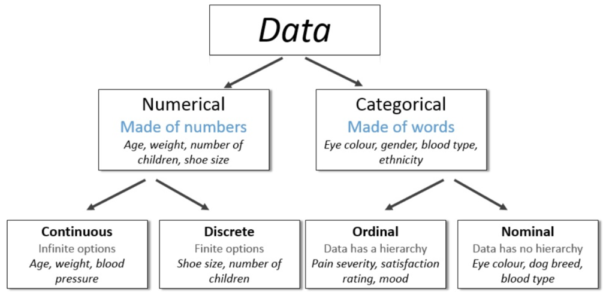
Categorical x Categorical
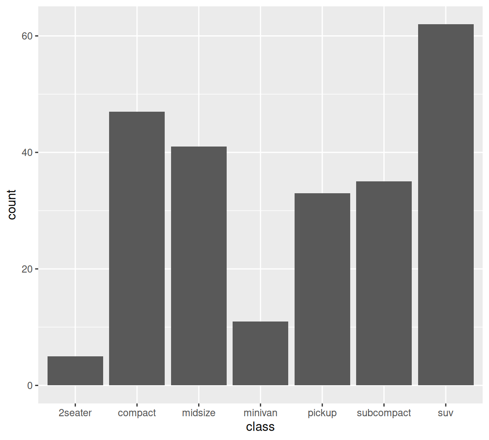
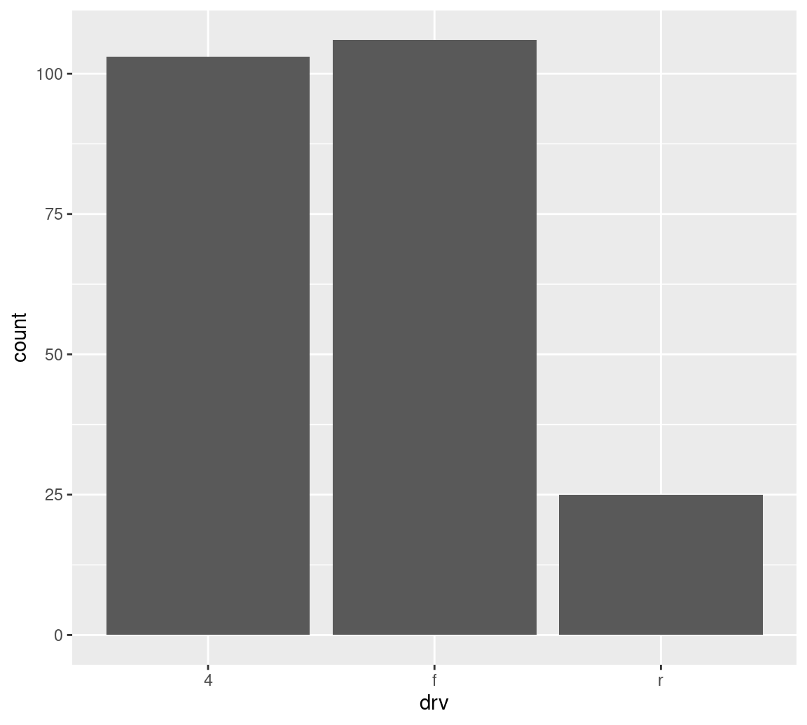
Categorical x Categorical
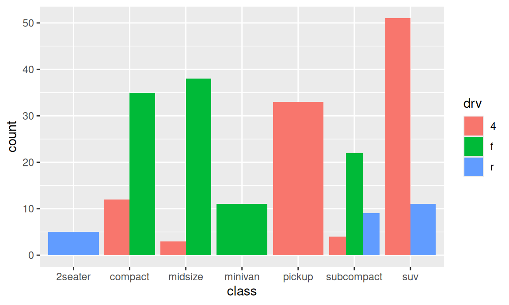
Categorical x Categorical
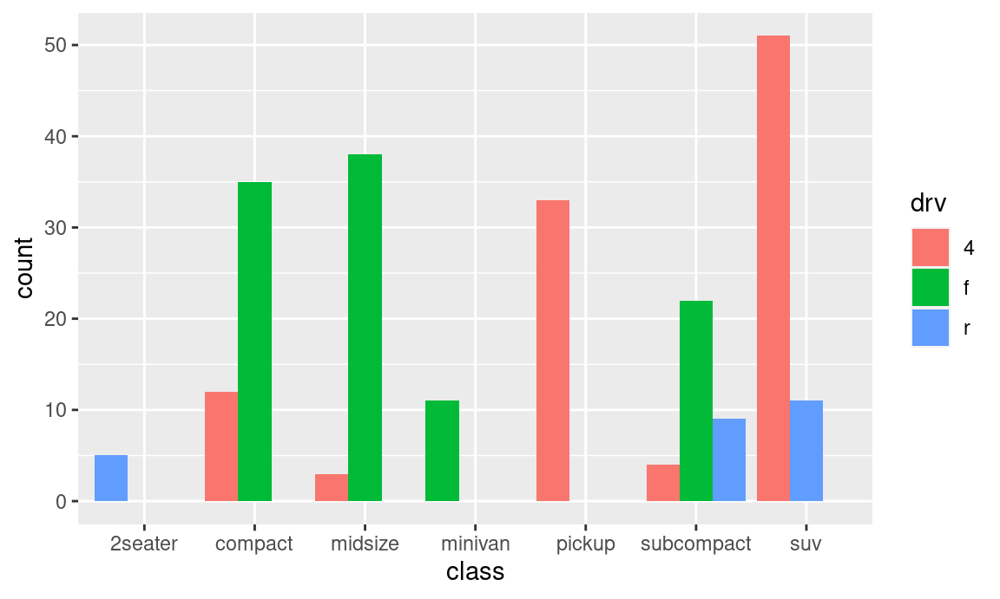
Categorical x Categorical
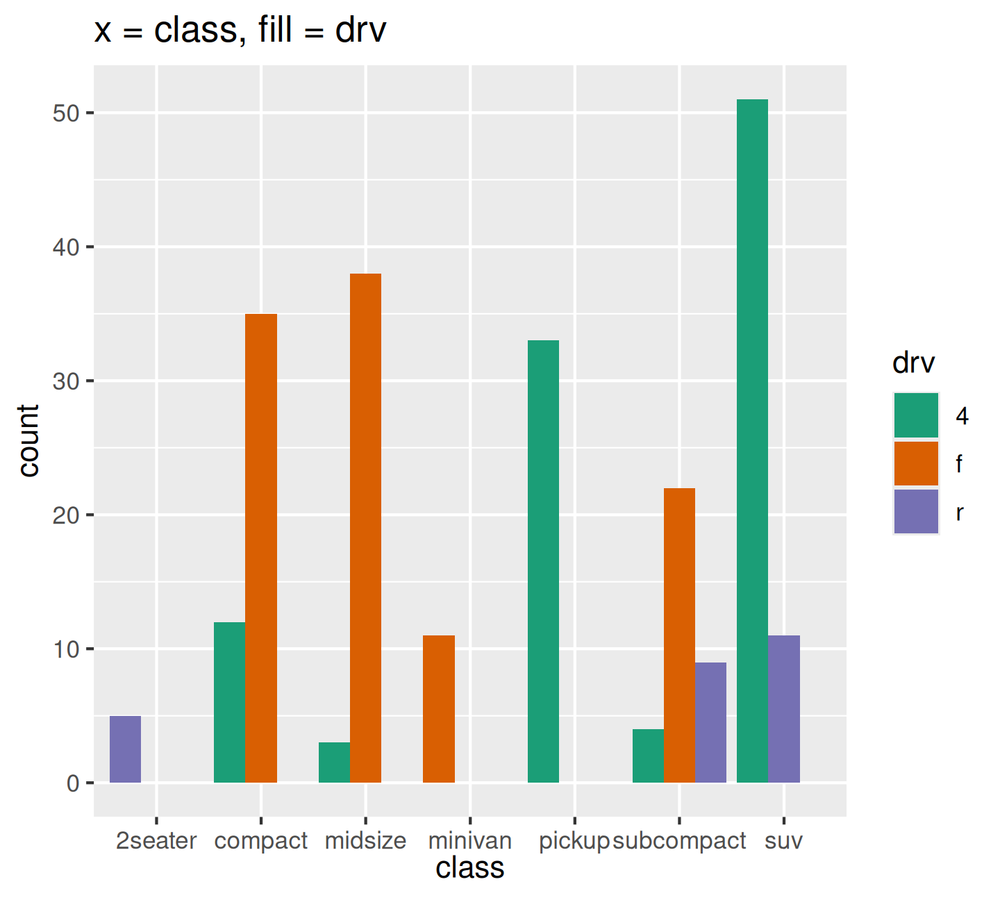
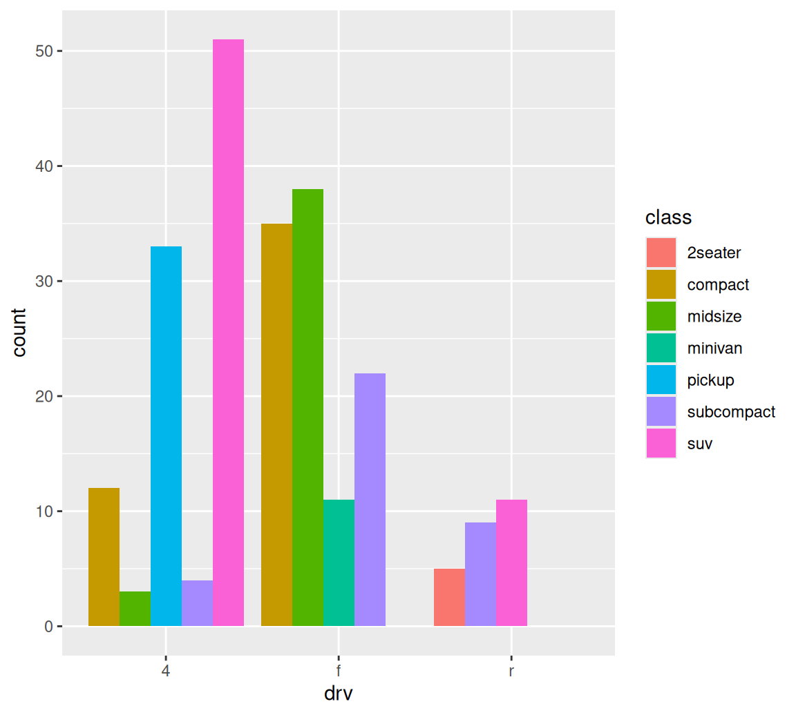
Categorical x Categorical
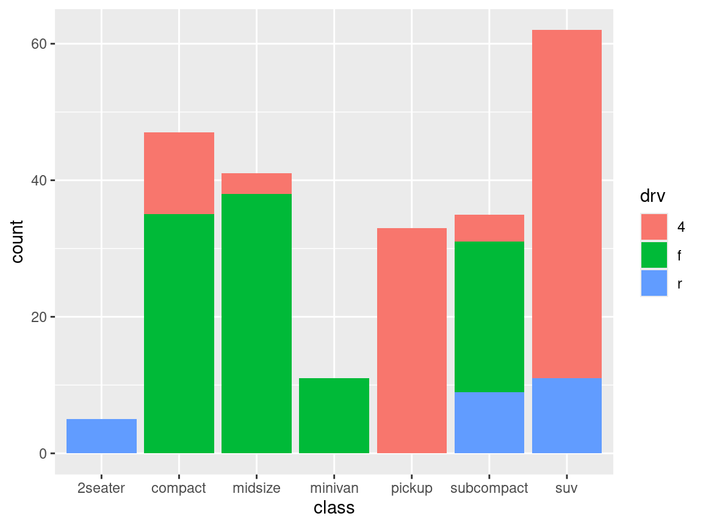
Categorical x Categorical
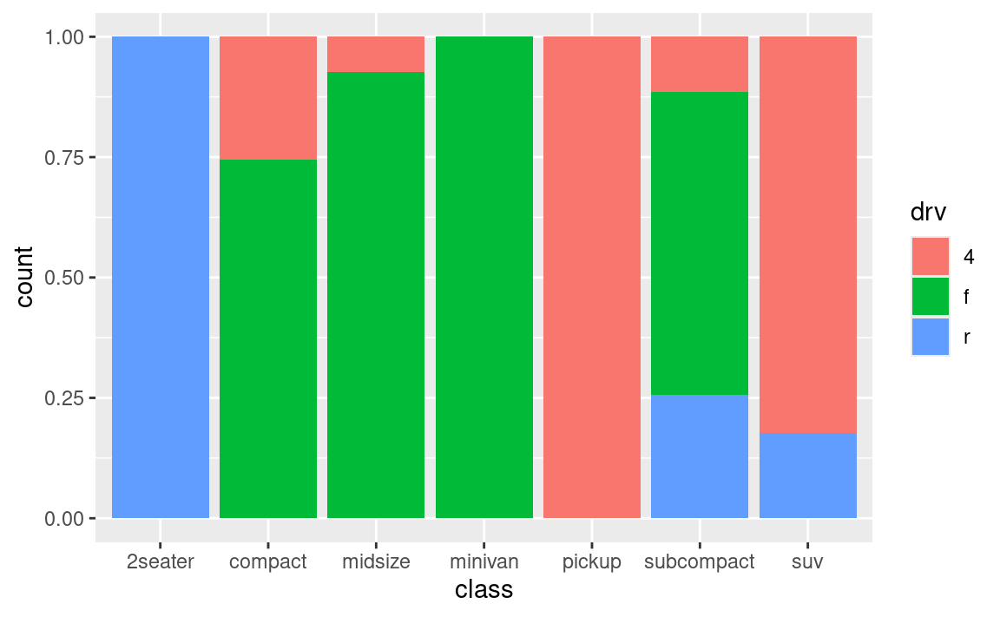
Categorical x Categorical
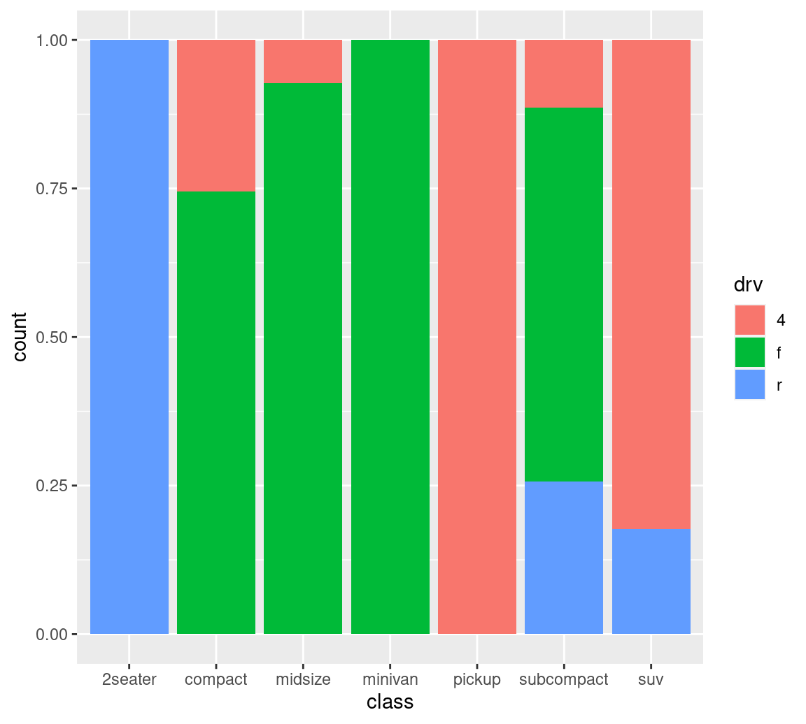
Categorical x Numeric Variable
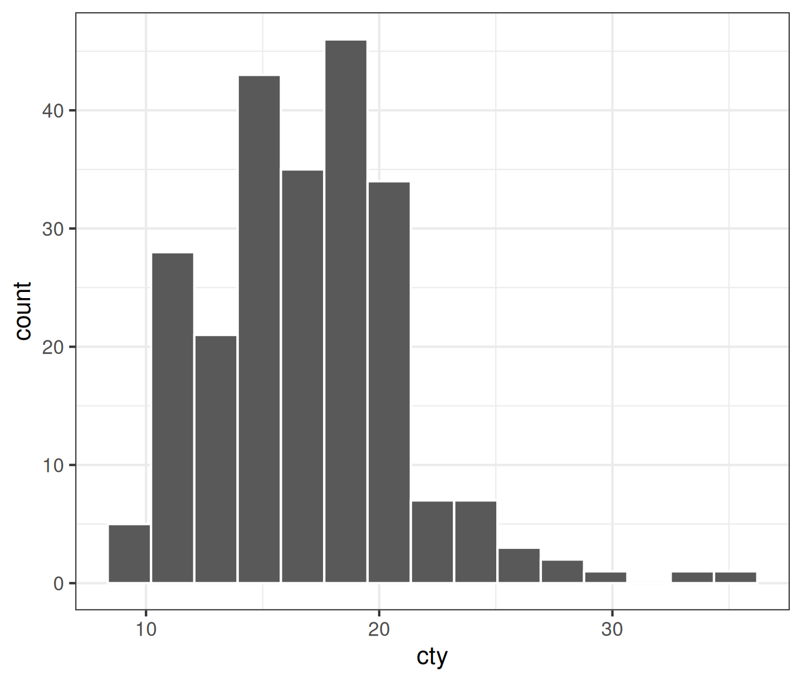

Categorical x Numeric Variable
1. Facet Wrap
Categorical x Numeric Variable
Categorical x Numeric Variable

Categorical x Numeric Variable

Numeric x Numeric Variable

Bivariate Categorical Variables
Numeric x Numeric Variable
Bivariate Analyses
Categorical x Categorical
- Tables, Proportions (with margins) and Bar plots (stacked, side-by-side, proportions)
Numeric x Categorical
- Descriptive statistics by group (aggregate across summary, mean, median, percentiles, standard deviations), facet wraps, overlapping density plots and box plots
Numeric x Numeric
- Descriptive statistics by group (cut numeric into categorical), correlations and scatter plots
For Next Class
Submit your “best” visualization of the relationship between:
The style (
cut) and clarity (clarity) of the diamondsThe style (
cut) and the cost (price) of the diamondsThe size (
carat) and the cost (price) of the diamonds